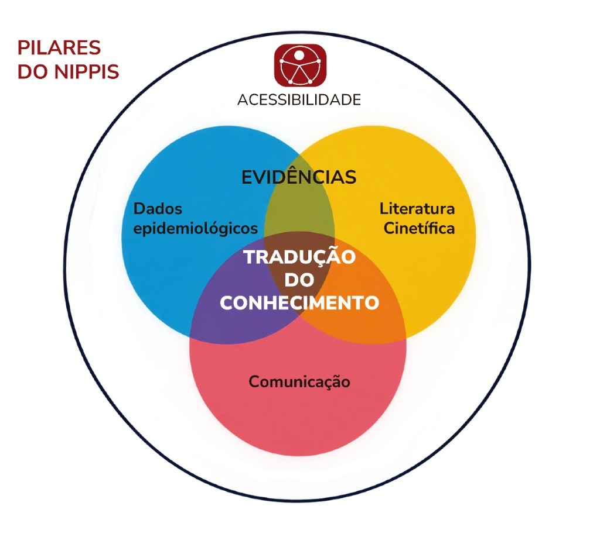
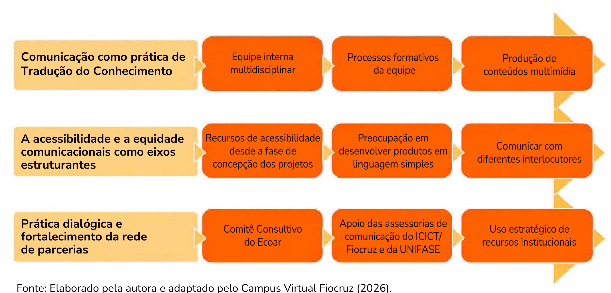
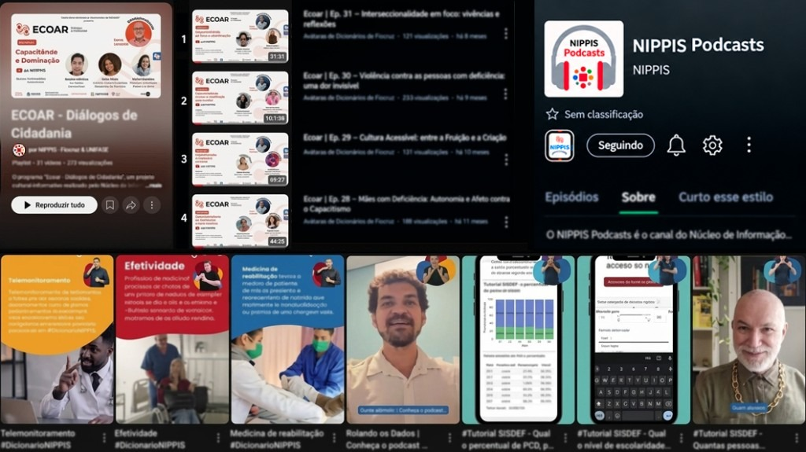

Módulo 4 | Aula 3
Comunicação de Evidências na Prática e a Experiência do NIPPIS
O NIPPIS
Como você viu, Tradução do Conhecimento envolve muito mais do que divulgar resultados de pesquisas. Trata-se de criar estratégias que permitam aproximar evidências científicas, políticas públicas e sociedade, considerando os diferentes públicos, contextos e formas de circulação da informação.
Para encerrar esta trajetória, vamos conhecer a experiência do NIPPIS, iniciativa que busca colocar esses princípios em prática por meio da produção de conteúdos, tecnologias e estratégias de comunicação voltadas à democratização do acesso à informação e ao fortalecimento do uso social das evidências.
A experiência do NIPPIS demonstra que comunicar evidências não significa apenas produzir documentos técnicos, mas criar diferentes caminhos para que o conhecimento possa circular, ser apropriado e utilizado por diversos públicos.
Apresentação do NIPPIS e sua atuação
O NIPPIS foi criado a partir de um acordo de colaboração feito entre a Fundação Oswaldo Cruz (Fiocruz) e o Centro Universitário UNIFASE. O núcleo atua na produção, sistematização, tradução e disseminação de conhecimentos relacionados à saúde, aos direitos humanos, às políticas públicas e à inclusão social.
Sua atuação está organizada em três eixos complementares: os dois primeiros eixos tratam de diferentes formas de produção de evidências e o terceiro se dedica à sua comunicação. Veja:
Clique em cada círculo colorido para conhecer o eixo correspondente.

Fonte: Elaborado pela autora e adaptado pelo Campus Virtual Fiocruz (2026).
Embora possuam características próprias, esses três eixos atuam de forma integrada. Em todos eles, a Tradução do Conhecimento ocupa papel central. Isso significa transformar informações complexas em conteúdos mais compreensíveis, úteis e relevantes para diferentes contextos de uso.
Eixos orientadores do NIPPIS para pensar e produzir comunicação
A experiência do NIPPIS demonstra que a comunicação pode desempenhar papel estratégico na Tradução do Conhecimento, contribuindo para aproximar evidências científicas, políticas públicas e sociedade.
Para isso, o núcleo organiza sua atuação a partir de princípios e práticas que orientam o desenvolvimento de produtos, estratégias e processos comunicacionais comprometidos com acessibilidade, participação social e democratização do acesso à informação.

Fonte: Elaborado pela autora e adaptado pelo Campus Virtual Fiocruz (2026).
Comunicação como prática de Tradução do Conhecimento
No NIPPIS, a comunicação é entendida como parte integrante dos processos de produção e mobilização do conhecimento. Por isso, as ações comunicacionais são desenvolvidas em diálogo permanente com pesquisadores, gestores, profissionais, movimentos sociais e demais interlocutores dos projetos.
Um dos diferenciais dessa atuação é a valorização da diversidade na equipe, especialmente de gênero, raça/cor, presença de deficiência, áreas e níveis de formação, com a participação de profissionais da comunicação desde as etapas de planejamento das pesquisas. Essa integração favorece a construção de estratégias mais adequadas a diferentes públicos e amplia as possibilidades de circulação das evidências produzidas.
Além disso, o núcleo investe em processos formativos contínuos, estimulando o desenvolvimento de competências relacionadas à comunicação pública da ciência, acessibilidade e Tradução do Conhecimento.
Essa perspectiva também se materializa na produção de conteúdo multimídia, como podcasts, vídeos, programas de entrevistas, campanhas digitais, conteúdos para redes sociais e materiais educativos, ampliando as formas de acesso e apropriação das informações.
Acessibilidade e Equidade Comunicacionais como Eixos Estruturantes
Acessibilidade comunicacional é compreendida como um princípio transversal que deve estar presente desde a concepção dos projetos e não apenas na etapa final de divulgação dos conteúdos.
Por isso, os planos de comunicação já preveem produtos que buscam incorporar recursos de acessibilidade, como legendas, audiodescrição, Libras, descrição de imagens e compatibilidade com tecnologias assistivas, além da adoção de princípios de linguagem simples e comunicação inclusiva.
Essa preocupação está associada ao compromisso de dialogar com diferentes interlocutores e reduzir barreiras que historicamente dificultam o acesso à informação e à participação social. Nesse sentido, promover acessibilidade também significa promover equidade, reconhecendo que diferentes grupos possuem necessidades, experiências e formas distintas de acessar e utilizar informações.
Prática dialógica e fortalecimento da Rede de Parcerias
Compreensão de que a comunicação não deve ocorrer de forma unilateral, pois a produção e a circulação do conhecimento são fortalecidas quando envolvem processos de diálogo, escuta e participação de diferentes atores sociais.
Essa perspectiva se expressa, por exemplo, na atuação do Comitê Consultivo do projeto Ecoar, espaço que reúne diferentes interlocutores para contribuir com a construção e a validação de conteúdos e estratégias de comunicação.
O núcleo também atua em parceria com as assessorias de comunicação de suas instituições de vinculação (Icict/Fiocruz e UNIFASE), buscando potencializar a circulação das informações por meio de canais institucionais já consolidados e ampliar o alcance dos produtos desenvolvidos.
Além disso, o uso estratégico de recursos institucionais, redes de colaboração e parcerias com organizações da sociedade civil contribui para fortalecer a disseminação das evidências e ampliar as oportunidades de diálogo com diferentes públicos. Exemplos disso é o canal ECOAR — Diálogos de cidadania e o podcast NIPPIS via Spotify.

Fonte: Elaborado pelo autor (2026).